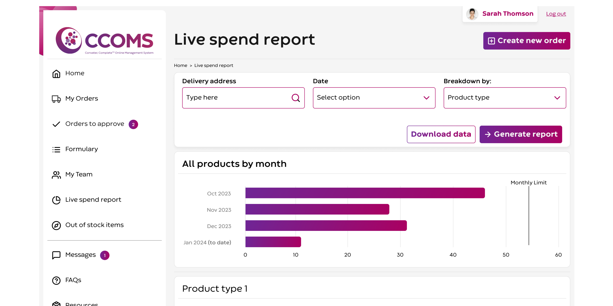
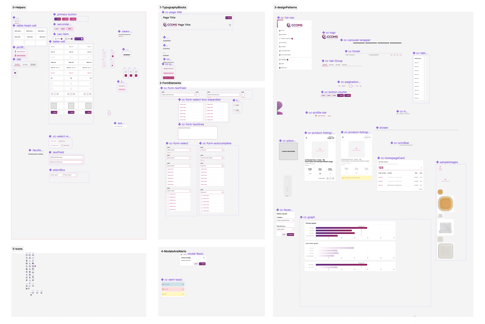
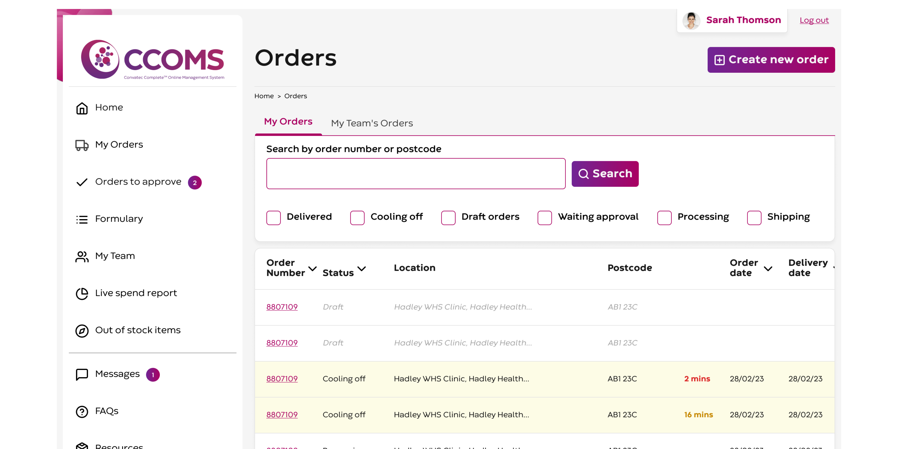

Client: Convatec // Duration: 5 months
Convatec are a FTSE 100 healthcare company specialising in wound and continence care.
I led the product design of an updated version of their CCOMS Portal, which allows 100s of clinics to place and manage product orders.

Jim did an amazing job of bringing to life the feedback and key considerations from the research. Jim provided a great work space to be creative and have clear communication.
I would recommend Jim to others who are looking for support with similar projects he provides great support and value.

As with most projects, I was initially brought in as the Lead Product Deisgner.
However, as the project evolved the client increasingly recognised the additional value I could bring outside of that skillset, so ended up with all the responsibilities listed above.
I'd adaptable enough to recognised not every project can run the same way, but for this case study, I've chosen to document what a typical process looks like for me

I was brought into this project quite near the beginning.
A visual designer had created a series of screen concepts which described how some of CCOMS might work.
There was also a user testing report of the existing of the existing system.
These concepts and research had been used as part of a proposal to the client (ie the user research proved they DID need to re-imagine CCOMS, and the concepts showed HOW it might look.
Understandably, there were gaps in concepts – the agency was reluctant to commit too much time and effort until the project had been signed off.
Firstly, I needed to get a good handle on the whole CCOMS application, and how it all fitted together.
The pitch work showed parts of the system, but I needed to know where those parts fitted into the whole, and which parts were missing.
This was surprisingly difficult – I eventually managed to get access to a very limited sandbox version which had very few products, clinics or users.
Similarly, I had admin level permissions, but there were several lower layers of permissions (and associated workflows) which I didn't have access to.
Some detective work was required to understand how all these pieces fitted together.
I solved this by creating an IA doc for each permission level. These were living documents: As I discovered more I was able to fill in gaps.
Eventually I consolidated these sitemaps into one, which clearly showed what screens were restricted to which permission level.
Once I had a handle on the IA, I quickly pulled together some user journey maps to understand how the pages fit together in some of the more common user journeys.
I also mapped insights from the (pitch) user testing onto this, to understand the areas the existing user journeys could be improved.
By now I had established relationships with the client and the key stakeholders from the client side.
As is often the case I was asked by the agency to extend my roles to take more of a lead on Product and Project management.
From this point forward I became the client's main point of contact and was autonomous over all the deliverables in partnership with them.
As I spent more time with the client, I began to uncover more complexity to the application from a business side, for example;
All these additional business logic scenarios required careful thought in terms of how they impacted the interface, and ultimately the UX.
On other project's I've often created BA documentation for each of these scenarios and use cases, but in this project (especially given that the project team was essentially me at this point), I made these updates directly into the wireframes.
I completed both these stages (Information architecture and User Jurney Mappiing) after approx 3 weeks
As part of the Business Analysis, it became evident that, the web app was actually part of a wider service, so service design elements were increasingly in play.
Customer satisfaction would also be determined not just by the app, but by how effectively I could wrap services around it.
For example, fulfilment, stock availability, and the interaction with the NHS (around things like formularies) were all things which needed to be considered
I expanded our initial User Journey maps to form more of a Service Blueprint, and discussed with the client how we would resolve these service challenges.
DESIGN PATTERNS VS COMPONENTS
In the next section I talk about Design Patterns and Components. These phrases can mean different things to different people - here's what I mean when I use these terms.
Design patterns iereusable sections of a page or screen which may be used multiple times across an application. In CCOMS this was things like tabulated data, product cards, modal overlays and so on.
Components go into design patterns. So for example a product card may contain several different componets - things like buttons, images, a certain text style and so on.

Based on all the assets I’d uncovered so far I had a pretty good idea of how the interfaces needed to work.
I began wireframing some design patterns which I knew would repeat multiple time across the site.
I pressure tested those design patterns across the user flows I’d identified.
This allowed me to consolidate and refine each pattern so they worked in multiple scenarios.
Reducing the number of patterns ultimately reduced the development effort, and ultimately costs.
This was an iterative process, but we ended it with a shortlist of approx 20 design patterns which were used through the whole site. There were no unique patterns.
Next, I looked at each design pattern and identified what the smaller level elements went into them.
Things like buttons (primary, secondary) etc were identified as as well as navigation elements, table elements (headers styles, cells styles etc) form elements and so on.
This gave is me a long list of all the elements I needed to design. I also had an understanding at this point of the relationship between those smaller level components, and the design patterns that inherited from them.
ATOMIC DESIGN
I'm a big fan of the principle of atomic design, but in practice I find the structure of atoms/molecules/organisms/ a little restrictive, which is why I've not talked more about it here
By this point I was proposing to change significant parts of the application but I was still keen to extract all the value I could do from the initial research document.
I cross referenced research insights with the latest design patterns, to establish which were still relevant, and where they were these were actioned.
By this point we had a bunch of repeatable design patterns which were rich with user insights.
The modular approach I’d taken (design patterns and components) meant it was a comparatively little effort to assemble these design patterns into page level wireframes.
Once wireframes were assembled I used Figma again to link them all up into comprehensive (for Figma 🙂) prototype.
I tested the functionality of this a couple of times then we were ready for user testing

Although I’ve done plenty of user testing in the past, the agency needed me to look at some other project work for them around this time, so I handed over the user testing to a dedicated user researcher.
To ease the handover, I wrote the initial drafts of the test scripts, and highlighted areas of the prototype where I thought further feedback would be useful.
I made sure I found the time to attend a few sessions as an observe – personally find this to be a really good way of getting under the skin/sentiment of some of the comments.
Working closely with the user researcher - I assessed the research and prioritised the insights.
We discussed this prioritisation with the client, then made the relevant amends directly into the Figma file.
I also pulled together a backlog of insights which couldn’t be done immediately, but which might be useful for further phases.
The “brand” in place for this project was very lightweight.
Essentially we had
Lastly, the brand guidelines were very light on digital execution and applications.
This was amplified by the fact that the CCOMS application was quite niche - there were certain features and design pattern in it that were specific to this very narrow audience, which I wouldn’t have expected to be covered off by brand guidelines.
So, before I got into the UI work, I took some time to extend the brand with some additional elements I knew we’d need. Specifically I added
By this point we had;
The final step was to marry these two elements together.
This process was relatively easy, because I'd taken a modular approach to design patterns and components previously in the process.
I made updates in Figma to text, and colour styles, and reusable components, which mean style changes could be made in one place then cascade throughout all screen.
It also means the handover to development is easier because they know exactly what patterns/components they need to recreate in code.